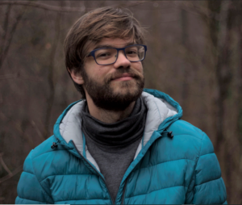
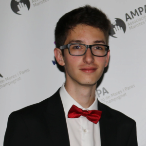
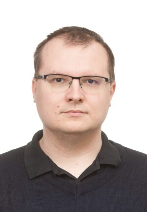
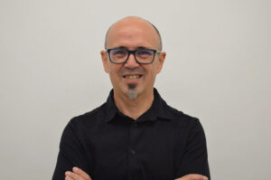

Authors
Carlos Pintado-Grima


Carlos Pintado-Grima is a PhD student in Bioinformatics at the Institute of Biotechnology and Biomedicine at the Autonomous University of Barcelona (UAB). He obtained his degree in Biology and the Bachelor of Science at UAB and Thompson Rivers University (Kamloops, BC, Canada). He recieved his M.Sc. in Bioinformatics in 2020 at UAB. His current research is focused on the development and analysis of bioinformatics tools to better understand protein aggregation, folding and misfolding.
Twitter: https://twitter.com/cpintadogrima
GitHub: https://github.com/cpintado7
Oriol Bárcenas

Oriol Bárcenas is an undergraduate bioinformatics researcher at the Institute of Biotechnology and Biomedicine at the Autonomous University of Barcelona (UAB). He is a Biotechnology B.Sc. graduate from UAB (2022) and has joined a Mathematical Modelling and Data Science M.Sc. He will follow his career by enrolling in the joint Bioinformatics Ph.D. program at UAB. His research will focus on the analysis of protein folding and aggregation data, as well as in silico protein design.
Twitter: https://twitter.com/oriolbarcenas
Valentin Iglesias

Valentín Iglesias is a PhD in Biochemistry and Molecular Biology working as a post-doc at the Institute of Biotechnology and Biomedicine (IBB) in the Autonomous University of Barcelona (UAB). His research is based on protein conformational conversion on structured and mainly intrinsically disordered proteins and the link between protein adaptations and taxonomic evolution.
Twitter: https://twitter.com/valentiniglesias
Michał Burdukiewicz

Michał Burdukiewicz is currently working as a post-doc at the Institute of Biotechnology and Biomedicine at the Autonomous University of Barcelona and a research assistant in the Centre for Clinical Research at the Medical University of Białystok. His research interests cover machine learning applications in the functional analysis of peptides and proteins, focusing on amyloids. Moreover, he is co-developing tools for proteomics, mainly hydrogen-deuterium exchange monitored by mass spectrometry.
Contact: michalburdukiewicz[at]gmail.com
Twitter: https://twitter.com/burdukiewicz
Website: https://github.com/michbur
Salvador Ventura

Salvador Ventura is a PhD in Biology and professor of Biochemistry and Molecular Biology at the Autonomous University of Barcelona (UAB). He is an ICREA researcher at the Institute of Biotechnology and Biomedicine (IBB) of the UAB, where he was also director, and leads a research group that investigates the link between protein structure and degenerative diseases to create new molecules to treat them.
Twitter: https://twitter.com/PPMC_UAB
Website: PPMC-LAB
Jaime Santos
Jaime info here
Irantzu Pallarès
Irantzu info here
Zoe Manglano-Artuñedo
Zoe info here